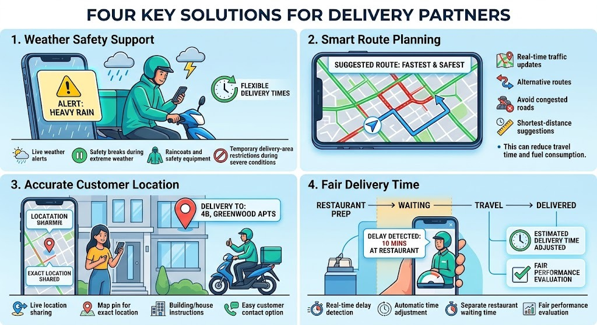

Making Food Delivery Safer, Easier & Fairer Delivery partners are the backbone of online food-delivery services. A better delivery system should reduce their stress, improve their safety, and help them earn a more stable income.
Provide weather alerts through the delivery app and allow flexible delivery times during heavy rain, extreme heat, or dangerous weather.
Use GPS and AI-based route planning to suggest the fastest and safest route while considering traffic conditions.
Improve location accuracy by allowing customers to share their exact GPS location and add clear delivery instructions.
Delivery partners should not be unfairly penalized for delays caused by restaurants, traffic, weather, or other situations beyond their control.
